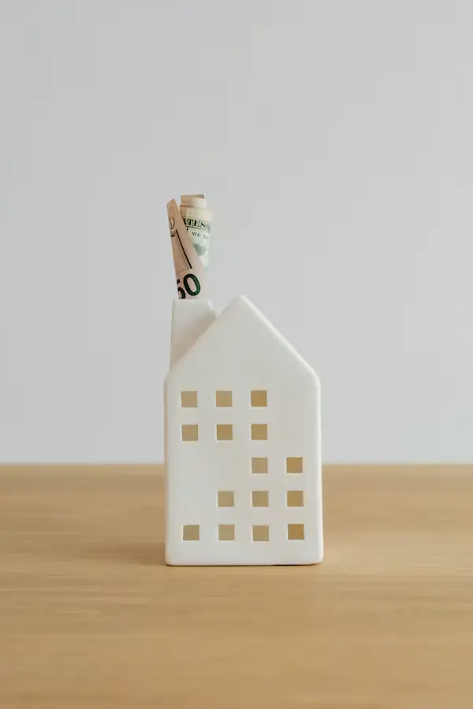

Turning Ideas Into Digital Experiences.
Stackly is a creative studio building interfaces, motion and product design for teams who care about the details other studios skip.

2021
A small studio that thinks like a product team, not a vendor.
I'm a designer and developer who partners directly with founders and product leads — no account managers, no hand-offs. Every project moves from sketch to shipped interface with one person accountable for the outcome.
The work spans branding, interface design and the front-end code to bring it to life, animated with the same care as the layout itself.
More about the studioProjects shipped
Happy clients
Years in craft
Awards & features
Featured projects
A handful of recent engagements — from early-stage identity to fully shipped product interfaces.


Six years, one studio, a lot of late-night builds.
Started
Left agency work to take on independent design projects full-time.
First major projects
Landed the first two multi-month product design engagements.
Freelance growth
Referrals took over — work started coming in faster than capacity.
Creative studio
Formalised into Stackly, with a proper process and a small trusted network of collaborators.

Advanced digital experiences
Started specialising in heavily animated, interaction-led product sites.
Current work
Taking on a small number of ambitious product and brand projects each quarter.

Skills & expertise
UI/UX Design
92% proficiencyWeb Development
88% proficiencyBranding
80% proficiencyMotion Design
85% proficiencyCreative Direction
90% proficiencyFrontend Development
86% proficiencyInteraction Design
83% proficiencyPlus a working fluency in accessibility, performance budgets and design systems.
Services, at a glance
Hover a card to flip it — or see the full breakdown on the services page.
Web Design
Layout systems built for the content you actually have, not a placeholder version of it.
- Design systems
- Responsive layout
- Prototyping
Web Development
Front-end builds that match the design file pixel for pixel, animated and fast.
- HTML/CSS/JS
- GSAP animation
- Performance
UI/UX Design
Research-informed flows, wireframes and high-fidelity screens that hold up in testing.
- User flows
- Wireframes
- Usability testing
Branding
Names, marks and systems that still feel right two years and fifty assets later.
- Identity
- Guidelines
- Collateral
Motion Design
Scroll-based storytelling and micro-interactions that explain, not just decorate.
- Scroll animation
- Micro‑interactions
- Explainers
Creative Strategy
Positioning and content direction before a single pixel gets placed.
- Positioning
- Content strategy
- Roadmapping
Discover
Understand the goal, the audience and the constraints before opening any design tool.
Research
Competitive scan, content audit, and a short list of references worth stealing ideas from.
Design
Wireframes into high-fidelity screens, reviewed together at every major milestone.
Develop
Clean, semantic front-end code that matches the approved design file exactly.
Animate
Scroll-triggered motion layered on top — purposeful, not just decorative.
Launch
QA across devices, performance pass, and a handover doc you'll actually use.
What clients say|about working together
Stackly rebuilt our entire site in three weeks and it still feels ahead of everything else in our space. Communication was constant and the animation work in particular was a level above what we'd seen from other studios.
What stood out was the process — every review had clear reasoning behind each decision. The dashboard redesign shipped on time and support tickets about navigation dropped almost immediately.
We came in wanting a redesign and left with a much clearer product strategy too. The attention to small interaction details made the app feel considerably more premium without changing our tech stack.